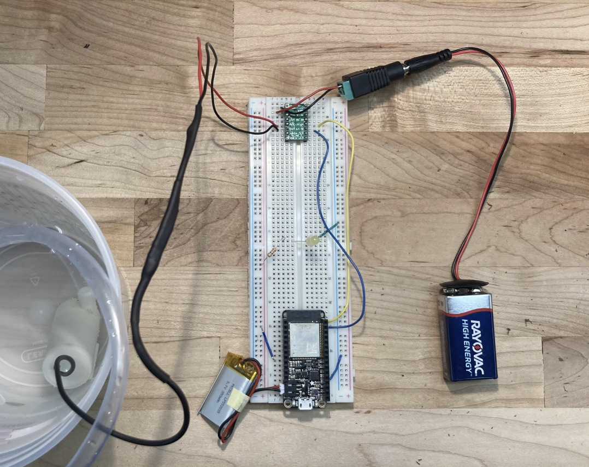
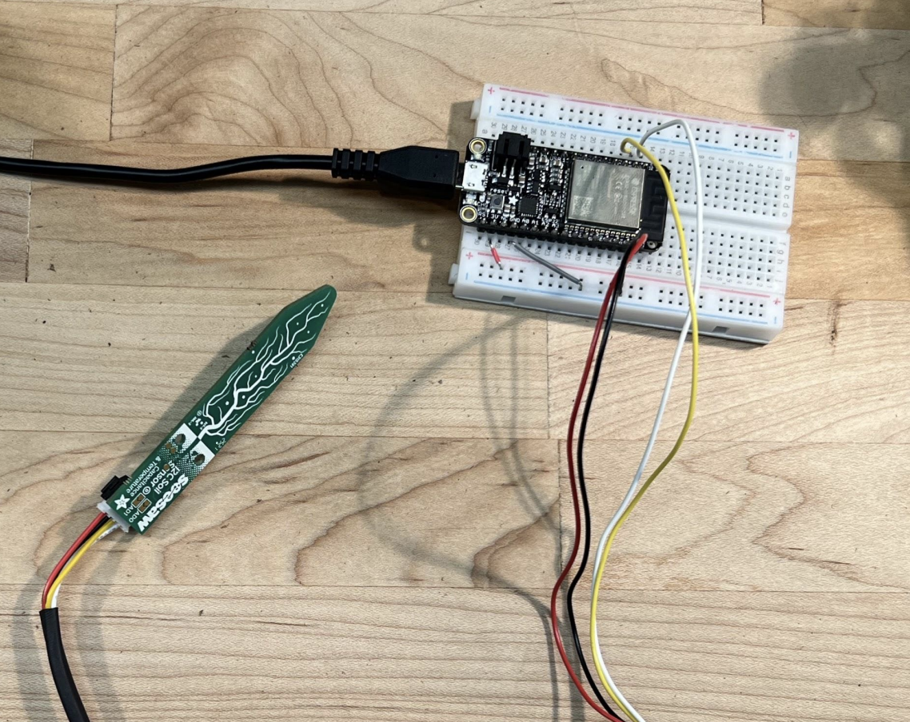

Project Info
Focus
Embedded control, sensing, and simple automation for plant care.
Built With
ESP32 boards, moisture sensor, pump hardware, and Adafruit IO.
Project Type
IoT / mechatronics project with sensing, actuation, and user monitoring.
Overview
This project was built to automate plant watering using live soil moisture readings. The system monitors moisture levels, triggers a pump when watering is needed, and logs activity through Adafruit IO for simple visibility and control.
What I Built
- An ESP32-based sensing and control setup for moisture monitoring and pump activation.
- A simple control flow that used thresholds to decide when watering should occur.
- A dashboard connection through Adafruit IO for monitoring moisture levels and pump events.
- Basic routing and enclosure considerations for tubing, wiring, and hardware placement.
Design Notes
- The system was designed to reduce inconsistent manual watering.
- Pump timing and threshold logic helped avoid unnecessary watering cycles.
- The build combined embedded hardware, sensor integration, and simple user-facing monitoring.
Key Takeaway
A simple sensing and pump-control system can make plant care more consistent while also serving as a practical embedded systems project.